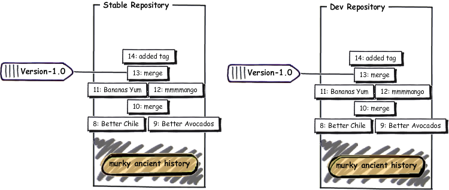
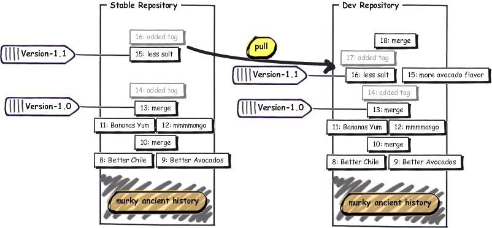
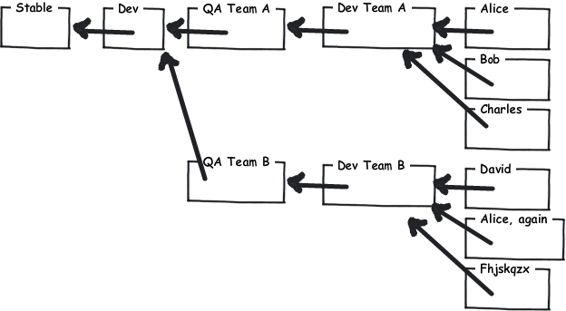

Nossa receita está ficando muito boa:
C:\Users\joel\receitas> hg log -l 3 changeset: 13:1b03ab783b17 tag: tip parent: 12:f923c9049234 parent: 11:0bd396c9b89b user: Rose Hillman <rose@example.com> date: Thu Feb 11 23:01:55 2010 -0500 summary: merge changeset: 12:f923c9049234 parent: 10:8646f8cd7154 user: Rose Hillman <rose@example.com> date: Thu Feb 11 22:49:31 2010 -0500 summary: mmmmanga changeset: 11:0bd396c9b89b user: Joel Spolsky <joel@joelonsoftware.com> date: Thu Feb 11 22:46:47 2010 -0500 summary: bananas HUMM
Vamos dar uma olhada melhor no número dos changesets:
changeset: 13:1b03ab783b17
A primeira parte do número, 13, é curta e conveniente. Só tem um problema: não é confiável!
Quando as pessoas na sua equipe trabalham separadamente e mesclam suas alterações, estes números curtos ficam dessincronizados:

Então, para todos os fins e propósitos, eu não posso dizer às pessoas “OK, vamos entregar a revisão baseada no changeset 13#8221;, porque eles podem ter diferentes ideias sobre que changeset 13. E é por isso que há aquele número hexadecimal maluco.
changeset: 13:1b03ab783b17
O número hexadecimal é consistente por todos os repositórios e nunca vai mudar.
OK, então eu posso dizer às pessoas “Ei, vamos fazer uma entrega hoje! Changeset número 1b03ab783b17! Não seria legal se pudéssemos dar um nome a este changeset?
Bem, nós podemos. E esse nome é chamado de tag.
C:\Users\joel\receitas> hg tag Version-1.0
Vejamos o log agora:
C:\Users\joel\receitas> hg log -l 2 changeset: 14:1adc88356f40 tag: tip user: Joel Spolsky <joel@joelonsoftware.com> date: Fri Feb 12 09:38:06 2010 -0500 summary: Added tag Version-1.0 for changeset 1b03ab783b17 changeset: 13:1b03ab783b17 tag: Version-1.0 parent: 12:f923c9049234 parent: 11:0bd396c9b89b user: Rose Hillman <rose@example.com> date: Thu Feb 11 23:01:55 2010 -0500 summary: merge
Perceba que o simples ato de adicionar a tag foi um changeset, e nele também foi dado um commit automaticamente. A partir de agora, toda ver que eu quiser me referenciar ao código que estamos entregando, eu posso usar Version-1.0 ao invés de 1b03ab783b17.
O CEO veio do 31º andar até nosso salão de trabalho com uma caixa de um espumante importado que parecia bem cara. O Stan ficou um pouco embrigado. Na verdade, não só um pouco. Ninguém já tinha visto nada como aquilo. Ele tirou sua camisa, mostrando seus músculos e flácidos tentando impressionar as meninas do departamento de marketing. “Eu consigo fazer flexões de barra na luminária”, ele bradava (nós temos aquelas luminárias suspensas com lâmpadas fluorescentes). Então ele pulou, se agarrou na peça e, é claro, trouxe tudo aquilo abaixo na mesma hora, afinal a luminária era uma estrutura fixa suspensa no teto apenas por uns fios de sustentação, que certamente não suportam os cento e tantos quilos do Stan. Tudo veio abaixo, inclusive parte do telhado. Vidro quebrado, metal e entulho para tudo quanto era lado. Depois de cair de bunda no chão, Stan ainda ficou resmungando e dizendo que ia acionar a empresa por nos deixar num ambiente de trabalho tão inseguro.
Eu e os demais da equipe voltamos aos nossos computadores para trabalhar no Guac 2.0.
* 1/2 cebola roxa picada, (cerca de 1/2 xícara)
* 1-2 pimentas jalapeño chiles, sem talo e sem sementes, picadas
* 2 colheres de sopa de coentro, picado bem fininho
* 1 colher de sopa de suco de limão
* 1/2 colher de chá de sal grosso
* Uma pitada de pimenta-do-reino moída na hora
* 1/2 tomate maduro, sem pele e sem sementes, picado
* 1 MANGA grande e madura, da estação.
* 1 deliciosa BANANA amarela.

* 200 abacates maduros do tipo Hass (não Haas)
* 1/2 cebola roxa picada, (cerca de 1/2 xícara)
* 1-2 pimentas jalapeño chiles, sem talo e sem sementes, picadas
* 2 colheres de sopa de coentro, picado bem fininho
* 1 colher de sopa de suco de limão
* 1/2 colher de chá de sal grosso
* Uma pitada de pimenta-do-reino moída na hora
* 1/2 tomate maduro, sem pele e sem sementes, picado
* 1 MANGA grande e madura, da estação.
* 1 deliciosa BANANA amarela.
Commit:
C:\Users\joel\receitas> hg com -m "agora com mais abacate"
Nem precisa dizer que a receita agora está num estado bem instável. Ela não foi testada nem nada. E eis que o (único) cliente demanda.
“A guacamole está muito salgada!” ele reclama. E não, ele não pode esperar até a versão 2.0 ficar pronta por uma correção.
Por sorte, nós tínhamos aquela tag. Eu posso usar hg up para voltar para qualquer versão no repositório.
C:\Users\joel\receitas> hg up -r Version-1.0 1 files updated, 0 files merged, 1 files removed, 0 files unresolved C:\Users\joel\receitas> type guac * 2 abacates maduros do tipo Hass (não Haas) * 1/2 cebola roxa picada (cerca de 1/2 xícara) * 1-2 pimentas jalapeño, sem talo e sem sementes, picadas ...
E agora eu posso corrigir esse problema bobo de excesso de sal:
* 1/2 cebola roxa picada (cerca de 1/2 xícara)
* 1-2 pimentas jalapeño, sem talo e sem sementes, picadas
* 2 colheres de sopa de coentro picado bem fininho
* 1 colher de sopa de suco de limão
* 1/2 colher de chá de sal grosso
* Uma pitada de pimenta-do-reino moída na hora
* 1/2 tomate maduro, sem pele e sem sementes, picado
* 1 MANGA grande e madura, da estação.
* 1 deliciosa BANANA amarela
* 1/2 cebola roxa picada (cerca de 1/2 xícara)
* 1-2 pimentas jalapeño, sem talo e sem sementes, picadas
* 2 colheres de sopa de coentro picado bem fininho
* 1 colher de sopa de suco de limão
* 1 grão de sal de cozinha, dividido ao meio
* Uma pitada de pimenta-do-reino moída na hora
* 1/2 tomate maduro, sem pele e sem sementes, picado
* 1 MANGA grande e madura, da estação.
* 1 deliciosa BANANA amarela
E:
C:\Users\joel\receitas> hg diff diff -r 1b03ab783b17 guac --- a/guac Thu Feb 11 23:01:55 2010 -0500 +++ b/guac Fri Feb 12 10:44:19 2010 -0500 @@ -3,7 +3,7 @@ * 1-2 pimentas jalapeño, sem talo e sem sementes, picadas * 2 colheres de sopa de coentro picado bem fininho * 1 colher de sopa de suco de limão -* 1/2 colher de chá de sal grosso +* 1 grão de sal de cozinha, dividido ao meio * Uma pitada de pimenta-do-reino moída na hora * 1/2 tomate maduro, sem pele e sem sementes, picado * 1 MANGA grande e madura, da estação. C:\Users\joel\receitas> hg com -m "menos sal" created new head
O Mercurial me lembra que eu acabei de criar uma nova cabeça. Existem duas cabeças agora: a cabeça da versão 2.0 na qual eu estava trabalhando e a cabeça desta 1.1 na qual acabei de dar commit.

Agora eu posso fazer a entrega para meu cliente, marcá-la com uma tag 1.1, e voltar a trabalhar na versão 2.0.
C:\Users\joel\receitas> hg tag -r . Version-1.1 C:\Users\joel\receitas> hg log -l 3 changeset: 17:f4220e321145 tag: tip user: Joel Spolsky <joel@joelonsoftware.com> date: Fri Feb 12 11:17:02 2010 -0500 summary: Added tag Version-1.1 for changeset 60ddc0122eb4 changeset: 16:60ddc0122eb4 tag: Version-1.1 parent: 13:1b03ab783b17 user: Joel Spolsky <joel@joelonsoftware.com> date: Fri Feb 12 10:44:32 2010 -0500 summary: menos sal changeset: 15:90c349eca2e8 user: Joel Spolsky <joel@joelonsoftware.com> date: Fri Feb 12 10:31:24 2010 -0500 summary: agora com mais abacate C:\Users\joel\receitas> hg up -r 15 2 files updated, 0 files merged, 0 files removed, 0 files unresolved C:\Users\joel\receitas> type guac GUACAMOLE 2.0 VAI FICAR SENSACIONAL! * 200 abacates maduros do tipo Hass (não Haas) * 1/2 cebola roxa picada (cerca de 1/2 xícara) * 1-2 pimentas jalapeño, sem talo e sem sementes, picadas * 2 colheres de sopa de coentro picado bem fininho * 1 colher de sopa de suco de limão * 1/2 colher de chá de sal grosso * Uma pitada de pimenta-do-reino moída na hora * 1/2 tomate maduro, sem pele e sem sementes, picado * 1 MANGA grande e madura, da estação. * 1 deliciosa BANANA amarela ...
O único problema é que a correção do sal não está mais aqui. Como eu resolvo isso?
C:\Users\joel\receitas> hg merge merging .hgtags
Uh-oh! Eu tenho que fazer um merge e combinar as tags. Isto é um bug chato do Mercurial. O problema é que as tags no Mercurial são apenas um arquivo chamado de .hgtags, e que também fica está sob controle de versão. Então, ocasionalmente, você vai precisar ter de combinar o conteúdo de diferentes versões do arquivo .hgtags. Em todo caso, tudo o que você tem a fazer é bem fácil… sempre mantenha AMBAS as versões de cada linha no arquivo.
merging guac 0 files updated, 2 files merged, 0 files removed, 0 files unresolved (branch merge, don't forget to commit) C:\Users\joel\receitas> hg diff guac diff -r 90c349eca2e8 guac --- a/guac Fri Feb 12 10:31:24 2010 -0500 +++ b/guac Fri Feb 12 11:32:43 2010 -0500 @@ -5,7 +5,7 @@ * 1-2 pimentas jalapeño, sem talo e sem sementes, picadas * 2 colheres de sopa de coentro picado bem fininho * 1 colher de sopa de suco de limão -* 1/2 colher de chá de sal grosso +* 1 grão de sal de cozinha, dividido ao meio * Uma pitada de pimenta-do-reino moída na hora * 1/2 tomate maduro, sem pele e sem sementes, picado * 1 MANGA grande e madura, da estação. C:\Users\joel\receitas> hg com -m "trazendo a correção de sal da versão 1.1"
Este método simples de voltar a versões anteriores com rótulo é ótimo para quando você só quer fazer uma pequena e inesperada correção no código de produção. Mas a verdade é que na maioria dos projetos de software, este tipo de coisa acontece o tempo todo, e o Mercurial tem uma forma mais robusta de lidar com isso.
Então agora eu vou só desfazer todo o trabalho depois da versão 1.0 e ter meu repositório de volta à como ele estava quando eu tinha acabado de entregar a versão 1.0 da receita; e então vou poder mostrar o jeito mais robusto de corrigir bugs para o cliente enquanto se trabalha numa versão futura ao mesmo.
C:\Users\joel\receitas> cd .. C:\Users\joel> hg clone -r 14 receitas receitas-estavel requesting all changes adding changesets adding manifests adding file changes added 15 changesets with 15 changes to 2 files updating to branch default 2 files updated, 0 files merged, 0 files removed, 0 files unresolved C:\Users\joel> cd receitas-estavel C:\Users\joel\receitas-stable> hg log -l 3 changeset: 14:1adc88356f40 tag: tip user: Joel Spolsky <joel@joelonsoftware.com> date: Fri Feb 12 09:38:06 2010 -0500 summary: Added tag Version-1.0 for changeset 1b03ab783b17 changeset: 13:1b03ab783b17 tag: Version-1.0 parent: 12:f923c9049234 parent: 11:0bd396c9b89b user: Rose Hillman <rose@example.com> date: Thu Feb 11 23:01:55 2010 -0500 summary: merge changeset: 12:f923c9049234 parent: 10:8646f8cd7154 user: Rose Hillman <rose@example.com> date: Thu Feb 11 22:49:31 2010 -0500 summary: mmmmanga
A ideia é que ao invpes de fazer tudo em apenas um repositório, nós vamos trabalhar em dois repositórios, sendo um chamado de estável e outro chamado de dev.
O repositório estável contém a última versão principal do código que foi entregue para os clientes. Sempre que você precisar corrigir um bug urgente, você o faz no estável. Neste exemplo, vamos colocar todas as correções no 1.0.
O repositório dev é onde as codificações principais de desenvolvimento em si acontecem, e que vão nos levar à versão 2.0.
Tão logo a versão 1.0 seja entregue, eu vou clonar o repositório estável para dev:
C:\Users\joel\receitas-stable> cd .. C:\Users\joel> hg clone receitas-estavel receitas-dev updating to branch default 2 files updated, 0 files merged, 0 files removed, 0 files unresolved
Agora eu tenho dois repositórios idênticos:
Como o histórico destes dois repositórios é o mesmo até o changeset 14, como vimos, o Mercurial vai utilizar um recurso de sistema de arquivos chamado de hard links para evitar de manter duas cópias em disco. Isto faz com que a operação hg clone seja fácil e rápida. Então nunca hesite em fazer vários e vários clones.
Agora podemos começar a trabalhar na receita de guacamole no repositório dev:
C:\Users\joel> cd receitas-dev C:\Users\joel\receitas-dev> edit guac C:\Users\joel\receitas-dev> hg diff diff -r 1adc88356f40 guac --- a/guac Fri Feb 12 09:38:06 2010 -0500 +++ b/guac Fri Feb 12 15:15:01 2010 -0500 @@ -1,4 +1,6 @@ -* 2 abacates maduros do tipo Hass (não Haas) +GUACAMOLE 2.0 VAI FICAR SENSACIONAL! + +* 200 abacates maduros do tipo Hass (não Haas) * 1/2 cebola roxa picada (cerca de 1/2 xícara) * 1-2 pimentas jalapeño, sem talo e sem sementes, picadas * 2 colheres de sopa de coentro picado bem fininho C:\Users\joel\receitas-dev> hg commit -m "agora com mais abacate"
E corrigir o problema do sal no repositório estável:
C:\Users\joel\receitas-dev> cd ..\receitas-stable C:\Users\joel\receitas-stable> edit guac C:\Users\joel\receitas-stable> hg diff diff -r 1adc88356f40 guac --- a/guac Fri Feb 12 09:38:06 2010 -0500 +++ b/guac Fri Feb 12 15:18:31 2010 -0500 @@ -3,7 +3,7 @@ * 1-2 pimentas jalapeño, sem talo e sem sementes, picadas * 2 colheres de sopa de coentro picado bem fininho * 1 colher de sopa de suco de limão -* 1/2 colher de chá de sal grosso +* 1 grão de sal de cozinha, dividido ao meio * Uma pitada de pimenta-do-reino moída na hora * 1/2 tomate maduro, sem pele e sem sementes, picado * 1 MANGA grande e madura, da estação. C:\Users\joel\receitas-stable> hg com -m "menos sal"
Vou marcar com uma tag e entregá-lo como versão 1.1:
C:\Users\joel\receitas-stable> hg tag Version-1.1
E agora, vamos baixar as correções feitas no estável também para o dev:
C:\Users\joel\receitas-stable> cd ..\receitas-dev C:\Users\joel\receitas-dev> hg in comparing with c:\Users\joel\receitas-stable searching for changes changeset: 15:e05c954f961f tag: Version-1.1 user: Joel Spolsky <joel@joelonsoftware.com> date: Fri Feb 12 15:28:27 2010 -0500 summary: menos sal changeset: 16:f0e8768829ed tag: tip user: Joel Spolsky <joel@joelonsoftware.com> date: Fri Feb 12 15:28:40 2010 -0500 summary: Added tag Version-1.1 for changeset e05c954f961f C:\Users\joel\receitas-dev> hg pull pulling from c:\Users\joel\receitas-stable searching for changes adding changesets adding manifests adding file changes added 2 changesets with 2 changes to 2 files (+1 heads) (run 'hg heads' to see heads, 'hg merge' to merge) C:\Users\joel\receitas-dev> hg merge merging guac 0 files updated, 1 files merged, 0 files removed, 0 files unresolved (branch merge, don't forget to commit) C:\Users\joel\receitas-dev> hg com -m "merge" C:\Users\joel\receitas-dev> type guac GUACAMOLE 2.0 VAI FICAR SENSACIONAL! * 200 abacates maduro do tipo Hass (não Haas) * 1/2 cebola roxa picada (cerca de 1/2 xícara) * 1-2 pimentas jalapeño, sem talo e sem sementes, picadas * 2 colheres de sopa de coentro picado bem fininho * 1 colher de sopa de suco de limão * 1 grão de sal de cozinha, dividido ao meio * Uma pitada de pimenta-do-reino moída na hora * 1/2 tomate maduro, sem pele e sem sementes, picado * 1 MANGA grande e madura, da estação. * 1 deliciosa BANANA amarela Amasse todos os ingredientes juntos. Sirva com salgadinhos tipo nachos.
Para ver melhor o que estamos fazendo:
Se você consegue entender esse gráfico maluco, então você está indo muito bem no seu entendimento do Mercurial. O resumo disto tudo é que em algum momento talvez o repostório estável vai conter apenas correções de bugs enquanto que o desenvolvimento vai ter novos códigos e as correções de bugs do estável incorporadas em si.
Há ainda outras formas que você pode querer usar repositórios múltiplos.
- Você pode configurar um repositório para a equipe onde só umas poucas pessoas trabalham juntas numa dada funcionalidade. Quando elas tiverem terminado e a funcionalidade desenvolvida esteja funcionando bem, você transfere as alterações do repositório da equipe para o repositório principal do desenvolvimento, e então todos os demais podem vê-las.
- Você pode configurar um repositório de QA para os testadores. Ao invés de transferir todas as atualizações para o repositório principal, você as manda para o repositório de QA onde seu código é testado. Uma vez que os testadores o aprovem, você transfere o código do repositório de QA para o repositório principal de desenvolvimento. Desta forma, o repositório principal sempre conterá código testado.
- Como cada desenvolvedor teu seu próprio repositório, você pode baixar um changeset experimental de algum colega para testá-lo, sem precisar disseminar tal alteração para todo o restante da equipe.
Em organizações muito grandes e complexas, você pode combinar estas técnicoas, configurando uma porção de repositórios que baixem atualizações uns dos outros. Conforme cada funcionalidade vai passando por etapas de teste e integração, ela é baixada e transferida ao longo da árvore de conexões de repositórios até que uma hora o novo código chegue ao repositório principal donde os cliente podem obtê-lo:
Experimente você mesmo
Eis aqui as coisas que você deve saber depois da leitura deste tutorial:
- Marcar versões antigas com tags e retornar a elas
- Organizar sua equipe com repositórios “estável” e “dev”
É isso! Assim chegamos ao fim deste tutorial. Eu não sequer cheguei perto de cobrir todos os recursos do Mercurial, mas há várias outras fontes de informação nas quais se aprofundar. Aqui tem um livro que cobre completamente e em detalhes tudo desta ferramenta.
• Um sistema de controle de versão completo baseado no Mercurial e Git
• Ramificação e mesclagem que realmente funcionam
• Hospedagem segura em nossos servidores
• Revisão de código perfeitamente integrada
Quer mais?
A Fog Creek oferece webinários mensais gratuitos que abordam além dos conceitos básicos do Mercurial. Cadastre-se em fogcreek.com.
Perguntas?
Procurando ajuda com o Kiln? Confira a Base de Conhecimentos do Kiln.
Sobre o autor.
Joel Spolsky é o fundador da Fog Creek Software, uma empresa de Nova York que prova que você pode tratar bem seus programadores e ainda assim ser lucrativo. Os programadores têm escritórios particulares, almoço gratuito e trabalham não mais que 40 horas por semana. Os clientes só pagam pelo software se eles gostarem do resultado. A Fog Creek é a criadora do FogBugz, do Kiln e do Fog Creek Copilot. O blog do Joel, Joel on Software, é uma referência para programadores no mundo todo.